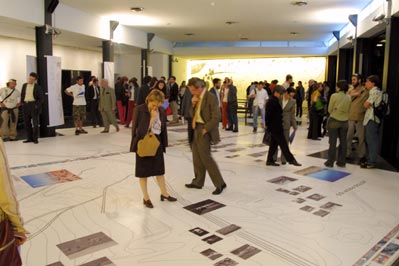
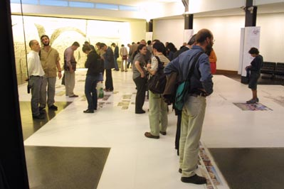

Lámina de
Barcelona Exposición de la Ciudad Abierta en el COAC  Lámina-suelo de 135 mt2, 30 planchetas de 1,5 x 3 mts. 16 de Mayo 2002, COAC, Barcelona Este cruce de lámina y suelo nos hizo trabajar juntos, a gráficos y arquitectos para esta exposición. Desde la interioridad del estudio sometimos esta lámina al debate de la relación simultáneo-continuo que veíamos en el hipertexto, y aquí, en lo simultáneo del espacio arquitectónico y su libre circulación con lo continuo del discurso que ha de ser presentado, de su lectura progresiva, de sus profundidades, sus capas, su lectura frontal y rasante. La lectura, entonces fue pensada en capas de profundidad. Lo que se ve de lejos son los 4 capítulos o partes con sus títulos y grandes fotos cuadradas a color, ellos como acentos que se anticipan sobre el gran plano de Autocad de la ciudad abierta. Sólo en la proximidad está la lectura detenida, la de un párrafo de texto. Hasta ahí con las partes y sus capas de profundidad (desde los tamaños); pues pensamos en la totalidad de la lámina a partir de un interlocutor - franja que abriera e indicara el recorrido al lector, como quien se sube a un tranvía y puede bajarse de un salto a voluntad. Franja de fotos y texto corrido como un trazo que atrapa el total.  |